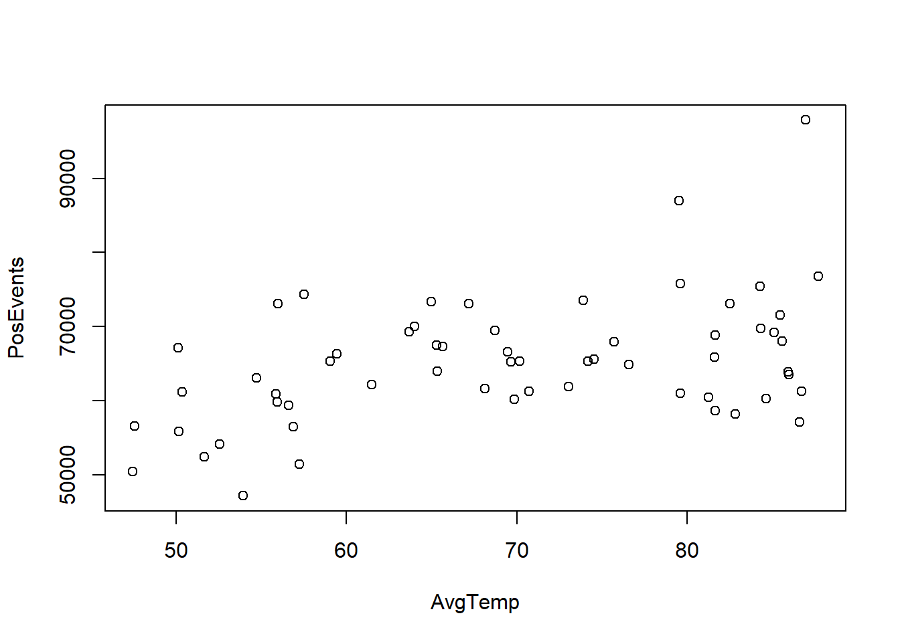

library(tidyverse)── Attaching packages ─────────────────────────────────────── tidyverse 1.3.2 ──
✔ ggplot2 3.4.1 ✔ purrr 1.0.1
✔ tibble 3.1.8 ✔ dplyr 1.1.0
✔ tidyr 1.3.0 ✔ stringr 1.5.0
✔ readr 2.1.3 ✔ forcats 1.0.0
── Conflicts ────────────────────────────────────────── tidyverse_conflicts() ──
✖ dplyr::filter() masks stats::filter()
✖ dplyr::lag() masks stats::lag()library(dplyr)
gdelt = read.csv('Gdelt_data.csv')
attach(gdelt)
gdelt["PosEvents"] <- Verbal.Cooperation+Material.Cooperation
gdelt["NegEvents"] <- Verbal.Conflict+Material.Conflict
weather = read.csv('Weather_data.csv')
w_sum = weather %>% group_by(Year, Month) %>% summarise(AvgTemp=mean(Avg.Temperature)) `summarise()` has grouped output by 'Year'. You can override using the
`.groups` argument.#dfw = weather %>% filter(City=='DFW')
ds = gdelt |> left_join(w_sum, join_by(Year,Month))
attach(ds)The following objects are masked from gdelt:
Material.Conflict, Material.Cooperation, Month, Verbal.Conflict,
Verbal.Cooperation, Yearplot(AvgTemp,PosEvents)
plot(AvgTemp,NegEvents)